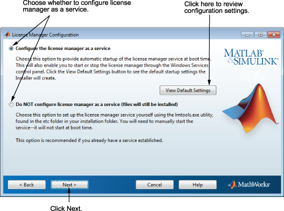

配置网络许可证管理器
配置网络许可证管理器的方式有多种，具体取决于您的安装平台：
Windows
配置网络许可证管理器服务后，便可在系统启动时自动启动该服务，并可通过 Windows 的“服务”控制面板集中管理许可证管理器。要查看默认的网络许可证管理器配置设置，请点击查看默认设置。如果您不想在此时配置网络许可证管理器服务，可在以后执行该操作。
注意
如果您有一个既有的网络许可证管理器，且在安装新的许可证管理器之前想要继续使用这一现有许可证管理器，请选择不将许可证管理器配置为服务(仍将安装文件) 选项。安装程序仍会安装网络许可证管理器文件。安装之后，您可以停止现有许可证管理器并启动新的许可证管理器。

Linux
要将网络许可证管理器条目添加到系统 Startup Items 文件夹，请保持选中该选项并点击下一步。指定将作为许可证管理器进程的所有者的用户名。出于安全原因，该用户名不能为根用户。